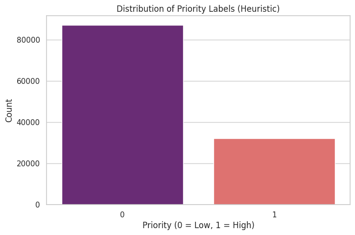
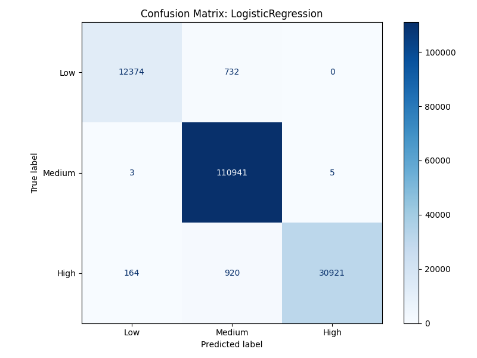

The React Frontend

Features
- Source Panel for RAG inspection.
- Side-by-side 4-way comparison.
- Interaction History & Logging.
Beyond the LLM: Engineering Speed, Cost, and Accuracy
Working with 2.8M real support conversations.

Is the model learning Urgency or just my Regex?
Features: Text length, brand sector, author ID.

Using ChromaDB + Local text-embedding-004[cite: 21, 28].
query_vector = embedder.embed_text(query)
results = ticket_store.search(query_vector, top_k=3)
# Retrieved Context: Twitter History → Gemini
Fulfilling the "Knowledge Assistant" requirement with a source panel.
The /api/predict endpoint acts as the brain, running 4 systems in parallel.
| System | Latency | Cost | Defense |
|---|---|---|---|
| ML Baseline | ~4.17ms | $0.00 | High-volume screening |
| LLM (Flash) | >3,000ms | $0.0001 | High-quality nuance |
Running the Decision Intelligence Orchestrator...
Full orchestration via Docker Compose.
Shared networks for Backend, Frontend, and Vector DB.
github.com/bmislol/decision-intelligence-assistant